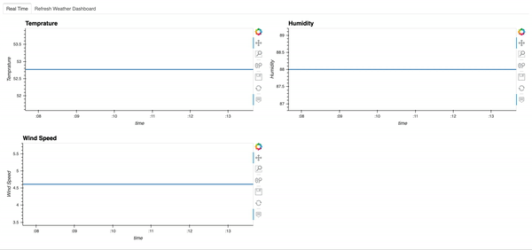
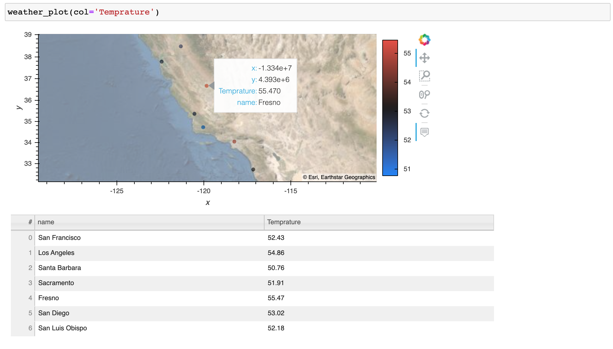

Real-time dashboard in Python¶
Streaming and Refreshing
Data scientists use data visualization to communicate data and generate insights. It’s essential for data scientists to know how to create meaningful visualization dashboards, especially real-time dashboards. This article talks about two ways to get your real-time dashboard in Python:
First, we use streaming data and create an auto-updated streaming dashboard.
Second, we use a “Refresh” button to refresh the dashboard whenever we need the dashboard to be refreshed.
For demonstration purposes, the plots and dashboards are very basic, but you will get the idea of how we do a real-time dashboard.
The code for this article can be found here: realtime_dashboard.ipynb and realtime_dashboard.py. The content of these two files is completely the same, just in different formats.
Data source¶
To show how we create this dashboard with a real-world API, we use weather data from the OpenWeather API as an example in this article.
If you would like to try out the code mentioned in this article, you will need to get access to the OpenWeather weather API. You can sign up at the Open Weather website and then get the API keys.
Set up¶
Before going into the code, let’s install the needed packages. I have created an enviornment.yml file. Please download this file and run the following to create and activate the environment.
conda env create -f environment.yml
conda activate realtime_dashboard
Alternatively, if you want to install all the packages on your own, please conda install datashader holoviews hvplot notebook numpy pandas panel param requests streamz. If you see any issues, the Python version and package versions I am using are noted in the environment.yml.
Import packages¶
Here we import the packages used for this article:
Streaming data and dashboard¶
First, we make a function weather_data to get weather data for a list of cities using the OpenWeather API. The output is a pandas dataframe with each row representing each city.
Second, we use streamz to create a streaming dataframe based on San Francisco’s weather data. The function streaming_weather_data is used as a callback function by the PeriodicDataFrame function to create a streamz streaming dataframe df. streamz docs documented how PeriodicDataFrame works:
“streamz provides a high-level convenience class for this purpose, called a PeriodicDataFrame. A PeriodicDataFrame uses Python’s asyncio event loop (used as part of Tornado in Jupyter and other interactive frameworks) to call a user-provided function at a regular interval, collecting the results and making them available for later processing. https://streamz.readthedocs.io/en/latest/dataframes.html#streaming-dataframes”
The streamz streaming dataframe df looks like this, with values updated every 30s (since we set interval=’30’).

Third, we make some very basic plots using hvPlot to plot the streamzdataframe, and then we use panel to organize the plots and put everything in a dashboard. If you would like to know more about how to usehvPlot to plot streamzdataframe, please see hvPlot docs.
Here is what the dashboard looks like. Since the streaming dataframe updates every 30s, this dashboard will automatically update every 30s as well. Here we see that Temperature changed, while humidity and wind speed did not.

Great, now you know how to make a streaming dataframe and a streaming dashboard.
If you would like to learn more, here is a great video tutorial on the streaming dashboard by my friend Dr. Jim Bednar. Please check it out!
Refresh dashboard¶
Sometimes, we don’t really need a streaming dashboard. Instead, we might just like to refresh the dashboard whenever we see it. In this section, I am going to show you how to make a “Refresh” button in your dashboard and refresh the dashboard with new data whenever you click “Refresh”.
First, let’s make a simple function weather_plot to plot weather data on a map given city names and return both the plot and the data.

With the plotting function ready, we can start making the refreshable dashboard. I use the param.Action function to trigger an update whenever we click on the button Refresh. In addition, I use the param.ObjectSelector function to create a dropdown menu of the dataframe columns we are interested in plotting and param.ObjectSelector trigger an update whenever we select a different option in the dropdown menu. Then the @param.depends('action', 'select_column') decorator tells the get_plot function to rerun whenever we click the Refresh button or select another column.
Here is what the refresh dashboard looks like:

Finally, we can use panel to combine the two dashboards we created.
Deployment¶
Our final dashboard pane is a panel object, which can be served by running:
panel serve realtime_dashboard.py
or
panel serve realtime_dashboard.ipynb
For more information on panel deployment, please refer to the panel docs.
Now you know how to make a real-time streaming dashboard and a refreshable dashboard in python using hvplot , paneland streamz. Hope you find this article helpful!
References¶
https://anaconda.cloud/tutorials/4038ae58-286a-4fdc-b8bf-b4b257e2edf3
https://openweathermap.org/api
https://panel.holoviz.org/gallery/param/action_button.html
https://streamz.readthedocs.io/en/latest/dataframes.html
https://hvplot.holoviz.org/user_guide/Streaming.html
https://panel.holoviz.org/user_guide/Deploy_and_Export.html
By Sophia Yang on February 7, 2021